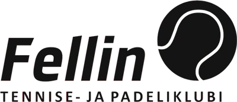
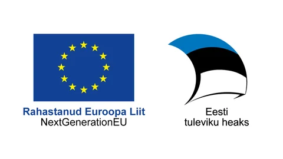
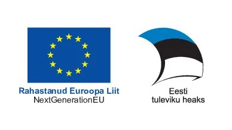

Klubi aastast 1924
Tennise- ja padeliklubi Fellin on mittetulundusühing. Klubi haldab Viljandi tennise- ja padelikeskust ning Ott Ahoneni tennise- ja padelikooli.

Klubi- Keskus
- Kool
Ajalugu
- 1924Viljandi tenniseklubi asutatakse vee- ja motospordi klubi koosseisus
- 1999Tenniseklubi Fellin registreeritakse mittetulundusühinguna
- 2005Ott Ahoneni tennisekool alustab erahuvikoolina
- 2023Klubi hakkab haldama järveäärseid padeliväljakuid ja õpetama padelit
- 2024Uus nimi: Viljandi tennise- ja padeliklubi Fellin
Viljandis alustanud parimad
Markus Kerner, Diana Klavan, Anelle Luik, Annemai Mutso, Saara Orav, Sonja Anderson, Steven Tensing, Brit Martin, Bert Martin, Kendra Aidla
Eesti noorte meistrivõistluste medalivõitjad.
Klubi FacebookisEuroopa Liidu toetus

Projekti “Salvestusseadmete paigaldamine Tennisekeskus OÜ varustuskindluse ja taastuvenergia kasutamise osakaalu suurendamiseks” on toetanud Euroopa Liit taasterahastu NextGenerationEU vahenditest summas 67 710 €. Projekti eesmärk on suurendada taastuvenergia osakaalu ettevõtte elektritarbimises ja varustuskindlust. Projekti sisuks on akude paigaldamine Tabasalu ja Viljandi tennisehallide juurde.

Projekti „Tennisekeskus OÜ varustuskindluse tõstmine elektri salvestusseadmete soetamise kaudu“ on rahastanud Euroopa Liit taasterahastu NextGenerationEU vahenditest summas 10 362,40 €.
Kontakt
Mängukohad
Sisehall: Kaalu 2, Viljandi
Väliväljakud: Ranna pst 3, Viljandi
Juriidiline aadress (ei ole mängukoht): Reinu tee 18, 71020 Viljandi
Kaart
Kaart laaditakse Google'i serverist ja Google võib seejuures salvestada küpsiseid.
Ava Google MapsisKaardil on kolm märki: tennisehall (Kaalu 2), väliväljakud (Ranna pst 3) ja klubi kontor. Kontor ei ole mängukoht.